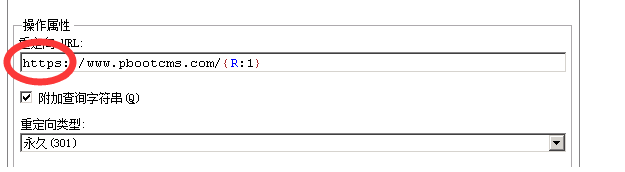

让网站域名权重集中，提升SEO效果
作者：admin 时间：2018-10-18 访问量：10750
1、为什么要做域名URL权重集中处理？
网站上线后一般情况我们都会绑定两个域名地址（不带www和带www的域名），甚至我们绑定多个不同的域名地址，那么这时候任何一个页面都有多种访问的地址，搜索引擎会对他们做不同页面进行处理，从而导致页面的权重分散，导致在搜索排名中受到影响。
2、怎么做域名URL权重集中？
这其中的方式有多种，那么今天给大家介绍的就是通过重写功能来301重定向，我们把站点的所有访问都集中到主域名上：
1）我们打开IIS控制台，选择对应的站点，找到URL重写，当然前提是你的服务器已经安装重写组件

2）点击添加规则
3）选择规范域名
（注意强制是使用小写和附件或删除尾部斜杠这两条最好不要使用，PHP对大小敏感，可能导致系统后他访问异常，而且一般搜索引擎会自动处理）
4）选择主域名
5)填写完成后规则自动添加到列表中，那么我们就已经完成了规范域名访问地址的操作。
这里有个需要注意的地方，如果我们使用https，那么我们上面添加的规定重定向地址并不会是https,这时候我们可以编辑规则，自己手动修改一下：
